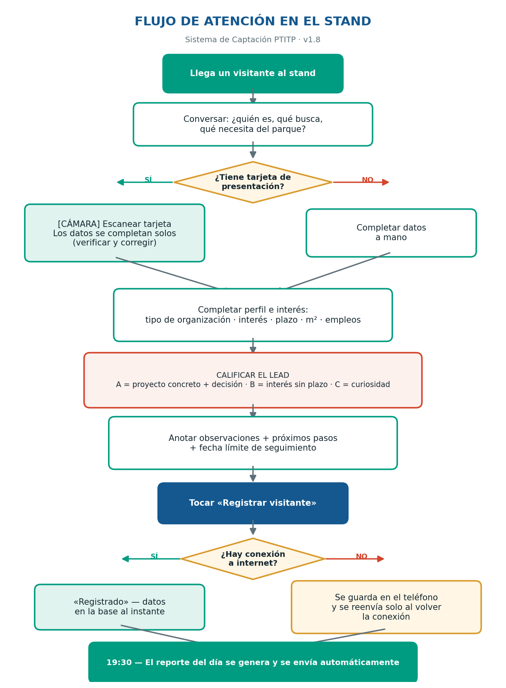
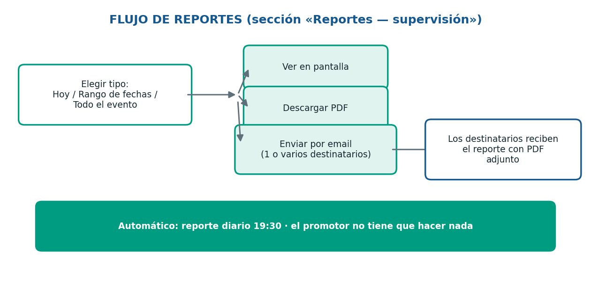

Sistema de Captación de Visitantes
Manual de uso para promotores · Versión 1.8 · Julio 2026
Parque Tecnológico Inteligente Taiwán-Paraguay (PTITP)
Minga Guazú, Alto Paraná, Paraguay
¿Qué es este sistema?
Es una aplicación web para registrar a los visitantes del stand del PTITP en ferias y exposiciones.
Cada registro llega al instante a la base de datos central, y el sistema genera automáticamente el
reporte del día a las 19:30. Funciona en cualquier teléfono, tablet o computadora — no hay que instalar nada.
Acceso
https://jaimehuang168.github.io/PTITP_EXPO_Lead/
1Abra el enlace (o escanee el código QR del stand) en el navegador de su teléfono.
2Recomendado: agréguelo a la pantalla de inicio
(en iPhone: Compartir → «Agregar a inicio»; en Android: menú ⋮ → «Agregar a pantalla principal»).
Quedará como una app con el ícono del PTITP.
3La primera vez, complete «Nombre del evento» y «Promotor que registra»
(su nombre). Se guardan en su teléfono: solo se completan una vez.
Indicador de conexión: arriba a la izquierda verá un punto
● verde (conectado) o ● rojo (sin conexión).
Con punto rojo puede seguir trabajando: los registros se guardan en el teléfono y se envían solos al volver la señal.
Actualizaciones: si aparece una franja azul arriba que dice
«Nueva versión disponible — tocar para actualizar», tóquela una vez. El número de versión figura al pie de la página.
Las tres pestañas
| Pestaña | Para qué sirve |
|---|
| 📝 Registro | El formulario principal: registrar visitantes y enviar reportes. Aquí pasará el 95% del tiempo. |
| 🔗 Códigos QR | Mostrar al visitante los códigos para que escanee: consulta en inglés, español o portugués, y el brochure del parque. |
| 🗺️ Mapas | Vista satelital y plano de loteamiento del parque, para mostrar ubicación y lotes durante la conversación. |
Flujo de atención en el stand

Registrar un visitante, paso a paso
1. Escanear la tarjeta de presentación (recomendado)
1Toque el botón «📷 Escanear tarjeta de presentación» y saque la foto
(o elija una de la galería). Sostenga la tarjeta plana y con buena luz.
2Espere unos segundos («Analizando tarjeta…»). El sistema completa solos:
nombre, empresa, cargo, teléfono, email y país. Los campos completados parpadean en verde.
3Siempre verifique y corrija los datos antes de continuar.
La imagen de la tarjeta queda archivada automáticamente y vinculada al registro.
Si el visitante no tiene tarjeta o el escaneo falla, complete los campos a mano. Solo el
nombre es obligatorio; si consigue el WhatsApp, ya es un buen registro.
2. Perfil e interés
- Tipo de organización y sector: manufactura, inversionista, logística, gobierno…
- Interés principal (puede marcar varios): alquiler de lote/nave, instalación de planta, inversión…
- Plazo de decisión: pregunte con naturalidad «¿para cuándo tienen pensado el proyecto?»
- Superficie (m²) y empleos estimados: si aplica — son los dos números más valiosos para el seguimiento.
3. Calificar el lead — la parte más importante
| Nivel | Criterio | Qué pasa después |
|---|
| A · Caliente | Tiene un proyecto concreto Y poder de decisión (dueño, gerente, director). | El equipo lo contacta en 24–48 hs. |
| B · Tibio | Interés real pero sin plazo definido, o debe consultar con otros. | Seguimiento en la semana. |
| C · Frío | Curiosidad, información general, estudiantes, prensa. | Entra a la base y al newsletter. |
En caso de duda entre A y B, elija B. Un A falso hace perder tiempo al equipo;
un B bien anotado se recupera en el seguimiento.
4. Observaciones — qué anotar
Escriba lo que no está en los otros campos. Las mejores observaciones responden a:
- ¿Tiene poder de decisión o debe consultar? ¿Con quién?
- ¿Mencionó presupuesto, plazos u otros parques que está evaluando?
- ¿Qué le preocupa? (logística, energía, impuestos, mano de obra, aduana)
- ¿Qué nivel de interés real percibió usted?
5. Próximos pasos y envío
1Marque las acciones prometidas (enviar brochure, agendar visita al parque, enviar propuesta…).
Solo prometa lo que se va a cumplir.
2Si corresponde, fije la fecha límite de seguimiento y el responsable.
3Toque «Registrar visitante». Verá la confirmación verde
«Registrado ✔» y el formulario queda listo para el próximo visitante.
Sin conexión: si aparece «Sin conexión: guardado en el dispositivo», no se perdió nada.
El registro quedó en su teléfono y se enviará solo. Si ve el botón «⟳ Reenviar registros pendientes»,
puede tocarlo cuando vuelva la señal.
Reportes (sección «supervisión»)

Ver reportes en pantalla
«Ver reporte de hoy» abre el reporte del día; «Ver reporte acumulado del evento» abre el
consolidado de toda la expo (por día, por país, por promotor, con todos los leads A y B).
Enviar reportes por email
1Escriba los destinatarios (uno o varios, separados por coma). Se recuerdan para la próxima vez.
2Elija el tipo: Hoy · Rango de fechas (aparecen los campos Desde/Hasta) · Todo el evento.
3Toque «✉️ Enviar reporte» y confirme. El email llega con el PDF adjunto.
Con «📥 Descargar PDF» obtiene el mismo reporte como archivo, sin enviar email.
Automático: todos los días a las 19:30 el reporte del día se genera y se envía solo
a la gerencia. El promotor no tiene que hacer nada.
Códigos QR y Mapas
Códigos QR: muestre la pantalla al visitante para que escanee con su teléfono:
Inquiry (inglés), Consulta (español), Consulta em Português, o el Brochure trilingüe.
Mapas: la vista satelital y el plano de loteamiento se deslizan horizontalmente;
«Ver en pantalla completa» los abre en grande y el plano puede descargarse en PDF para compartir.
Problemas frecuentes
| Síntoma | Solución |
|---|
| El punto de conexión está rojo | Siga trabajando normal; los registros se guardan y reenvían solos. |
| «No se pudo analizar la tarjeta» | Reintente con mejor luz y la tarjeta plana, o complete a mano. La foto igual queda archivada. |
| El escaneo dice «Límite diario alcanzado» | Se llegó al tope de seguridad del día; registre a mano y avise al administrador. |
| La app se ve «vieja» o falta un botón | Toque la franja azul de actualización si aparece, o cierre y vuelva a abrir la página. |
| Envié un registro con un error | No se puede editar desde la app: avise al administrador con el nombre del visitante para corregirlo en la base. |
Sistema de Captación PTITP · v1.8 ·
Soporte: administrador del sistema · Parque Tecnológico Inteligente Taiwán-Paraguay